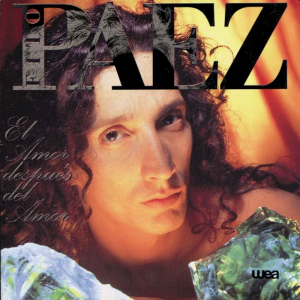
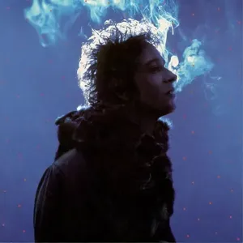

Discos más vendidos
El amor después del amor
"El amor después del amor" es el séptimo álbum de estudio del cantante argentino Fito Páez, publicado el 1 de junio de 1992 por Warner Music. Cuenta con la participación de artistas como Luis Alberto Spinetta, Charly García, Fabiana Cantilo, entre otros.
Recomendación de la casa
Alta suciedad
"Alta suciedad" es el quinto álbum de estudio de Andrés Calamaro, lanzado el 9 de septiembre de 1997 por WEA International. Fue su primer disco de canciones nuevas tras su separación de Los Rodríguez, y vendió más de 700 mil copias.

Recomendación de la casa
Bocanada
"Bocanada" es el segundo álbum de estudio de Gustavo Cerati, lanzado en 1999, luego de la disolución de Soda Stereo. El disco presenta una fusión de estilos como el pop, el rock, el electrónico y el trip-hop, mostrando una gran evolución artística.
